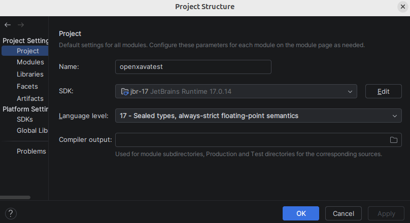
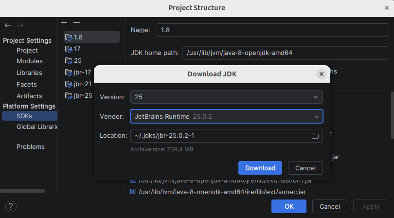
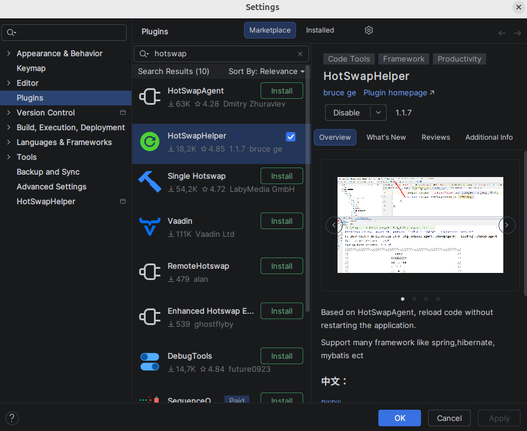
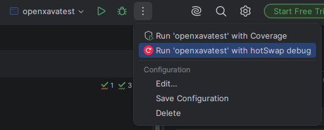

No es necesario arrancar en modo debug para que se reconozcan los cambios, pero sí que hay que usar un JDK de JetBrains con el agente HotSwap configurado y arrancando con ciertas opciones, como se explica más abajo.
IntelliJ es el IDE recomendado para la recarga de código en caliente con OpenXava. Para usarlo es necesario un JDK de JetBrains: JBR 17, 21 o 25. Usa la opción Project Structure... de IntelliJ para establecer uno de estos JDK para el proyecto:

Si no tienes un JDK de JetBrains puedes descargarlo desde el propio IntelliJ en Project Structure..., en la sección SDKs:

Además, hay que instalar un plugin llamado HotSwapHelper. Ve a Settings > Plugins y búscalo:

Con esto ya se puede ejecutar la aplicación, pero no de la forma habitual. Hay que usar la opción run with Hotswap debug que ahora tenemos disponible en el menú de ejecución de IntelliJ:

Si todo va bien, en la salida del log, al principio, debería haber un mensaje como este:
Connected to the target VM, address: '127.0.0.1:54715', transport: 'socket'
HOTSWAP AGENT: 12:30:48.070 INFO (org.hotswap.agent.HotswapAgent) - Loading Hotswap agent {2.0.2} - unlimited runtime class redefinition.
Si es así, ya se puede cambiar el código y ver el efecto de forma inmediata.
Ten en cuenta que con Java 25 la aplicación se para de vez en cuando, con Java 21 falla mucho menos y con Java 17 no falla. Aun así es mucho más práctico que reiniciar la aplicación por cada cambio. Lo normal es que a medida que salgan nuevas versiones de mantenimiento de Java 25 sea cada vez más robusto.
También se puede usar la recarga de clases en caliente fuera de IntelliJ y sin usar ningún IDE, desde el terminal.
Para ello hay que descargar un JDK de JetBrains, que se puede hacer desde aquí: https://github.com/JetBrains/JetBrainsRuntime/releases
Después de instalar el JDK de JetBrains, dentro de la carpeta lib hay
que crear una carpeta hotswap y copiar dentro un archivo
hotswap-agent.jar, sin número de versión. Este jar se puede descargar desde aquí:
https://github.com/HotswapProjects/HotswapAgent/releases
Importante: al copiarlo dentro de lib/hotswap hay que renombrarlo para
que se llame solo hotswap-agent.jar.
Ahora solo hay que arrancar la aplicación con este JDK enviando unas opciones de arranque para activar el HotSwap.
Por ejemplo, en Linux:
export MAVEN_OPTS="-XX:+AllowEnhancedClassRedefinition -XX:HotswapAgent=fatjar"
export JAVA_HOME=/home/javi/.jdks/jbr-25.0.2
export PATH=$JAVA_HOME/bin:$PATH
mvn exec:java
En Windows:
set MAVEN_OPTS=-XX:+AllowEnhancedClassRedefinition -XX:HotswapAgent=fatjar
set JAVA_HOME=C:\Users\youruser\.jdks\jbr-25.0.2
set PATH=%JAVA_HOME%\bin;%PATH%
mvn exec:java
Si se hace bien, al ejecutar la aplicación deberíamos ver:
Connected to the target VM, address: '127.0.0.1:54715', transport: 'socket'
HOTSWAP AGENT: 12:30:48.070 INFO (org.hotswap.agent.HotswapAgent) - Loading Hotswap agent {2.0.3} - unlimited runtime class redefinition.
Para más información ver: https://github.com/HotswapProjects/HotswapAgent
La recarga de clases en caliente puede funcionar desde cualquier IDE, como
Eclipse, NetBeans o Visual Studio Code. Solo hay que usar un JDK de JetBrains
y copiarle el hotswap-agent.jar como se describe en la sección
Sin IDE. Además, hay que configurar el arranque de la
aplicación en el IDE para que use las opciones
-XX:+AllowEnhancedClassRedefinition -XX:HotswapAgent=fatjar.
Si queremos usar OpenXava Studio o Java 11 debemos seguir la siguiente documentación: Carga de código en caliente con OpenXava Studio / Java 11.
El mecanismo de recarga en caliente está diseñado para un rendimiento óptimo, cargando los metadatos justos únicamente cuando es necesario o reiniciando la sesión de Hibernate solo cuando se modifica la parte persistente de alguna entidad. Además, en producción donde usas un JDK diferente al de desarrollo, el mecanismo de recarga está desactivado.
A veces estás desarrollando una librería o un proyecto que es una dependencia del proyecto actual, y te gustaría que cuando cambias el código de la librería también ver los resultado en caliente. Para este caso puede arrancar tu aplicación indicando un lista de classpaths extra. Edita tu clase lanzadora y escribe algo así:
public static void main(String[] args) throws Exception {
AppServer.run("yourapp", "../yourlib/target/classes");
}
Ahora cuando se cambie algo en ../yourlib/target/classes también se recargará automáticamente. Esto te permite desarrollar tu librería probándola en una aplicación final, con la misma agilidad que con cualquier otra aplicación.
El indicar classpaths extra al arrancar la aplicación está disponible desde la versión 7.5.
En XavaPro 7.5, hay mejoras significativas respecto a la disponibilidad de módulos durante el desarrollo. Cuando se usa carga de código en caliente:
Esto agiliza el proceso de desarrollo, ya que ya no es necesario añadir manualmente los nuevos módulos al rol "user" para tenerlos disponibles. Sin embargo, en entornos de producción (donde no se usa Hotswap Agent), el comportamiento sigue siendo el mismo por motivos de seguridad: los nuevos módulos deben asignarse explícitamente a un rol para estar disponibles para los usuarios.